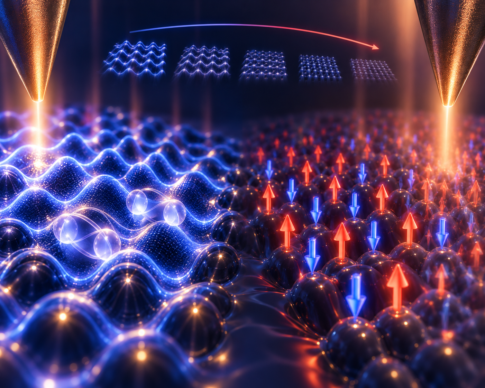
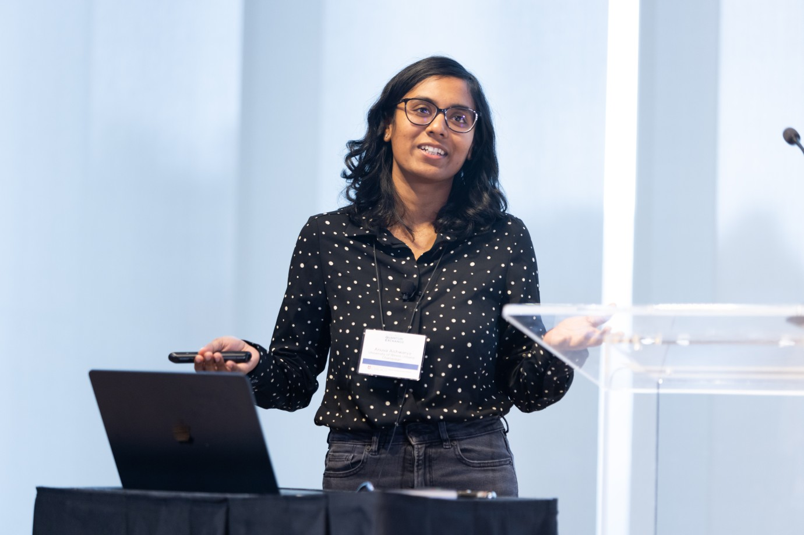

“Nobody ever figures out what life is all about, and it doesn’t matter. Explore the world. Nearly everything is really interesting if you go into it deeply enough.”
— Richard P. Feynman
What we work on
Research
Three threads run through the lab's projects, each grounded in atomic-resolution imaging and quantum sensing rather than bulk measurements alone.
![Five-panel phase-referenced quasiparticle interference figure for monolayer Fe(Se,Te)/Bi₂Te₃: (a) a Brillouin-zone schematic with the α′ and β′ pockets at Γ and the γ′ pocket at M, joined by the scattering vector q(2a_Fe); (b) the relative phase amplitude of q₂ against bias, overlaid on a dI/dV spectrum with the gap energies ±E_α′ and ±E_β′ marked; (c–e) phase-referenced QPI maps at three energy pairs, in which the signal at q(2a_Fe) changes sign. Colour scale runs from negative in blue to positive in red.](images/pr-qpi.png) Phase-referenced quasiparticle interference imaging
Phase-referenced quasiparticle interference imaging
Unconventional superconductivity
Reading pairing symmetry off the atomic lattice
Scanning tunneling microscopy is a powerful tool for uncovering superconducting order parameters through atomic-scale spectroscopy and phase-sensitive quasiparticle interference. Using these techniques, we read out the pairing symmetry of monolayer Fe(Se,Te) on Bi₂Te₃. Despite its atomic-scale thickness, the heterostructure retains a robust multigap superconducting state with sign-changing s-wave pairing, while revealing a pattern of sign reversals distinct from the bulk. This establishes monolayer Fe(Se,Te)/Bi₂Te₃ as a tunable platform for exploring unconventional superconductivity, non-trivial topology, and Majorana states.
Intertwined charge and spin orders
Watching order form, melt, and defect
STM provides unprecented real space and momentum space resolution for imaging symmetry-broken states. Our work has discovered an unconventional, magnetic-field sensitive, low temperature charge density wave in UTe₂ that coexists with triplet superconductivity. It melts under magnetic field, eventually dying at the superconducting critical field. We have also examined how a cascade of magnetic orders develop in the layered antiferromagnet GdTe₃, tracking how these orders intertwine and melt at the atomic scale using STM and spin-polarized STM.

Charge and spin density waves![Composite figure. Left: false-color micrograph of a nanowire mounted on a scanning probe, annotated to show spin-up electrons travelling down the wire and spin-down electrons travelling up, with a 10 micrometre scale bar. Right: schematics of the axion magnetoelectric response — the tip magnetization M(tip) induced along the tip-sample electric field, its linear dependence on that field, the resulting bias-dependent spin modulation for positive and negative bias, and a topography strip showing the corresponding alternating spin pattern on a 0 to 80 picometre height scale.](images/nw_axion.png) Topological nanowire tip and axionic tunneling
Topological nanowire tip and axionic tunneling
Topological phenomena
Probing surface states through spin-selective tunneling
Non-trivial band-topology gives rise to symmetry protected boundary modes and can give rise to exotic axionic physics under certain conditions. We manipulate such surface states in strongly correlated topological Kondo insulators in a novel, nanowire geometry to obtain spin-resolved tunneling. These probes are non-invasive atomic scale spin-sensors and display Axionic tunneling phenomena.
Watch the work
Recorded talks
Seminars and conference talks on the projects above.

The curious case of the magnetic field-sensitive charge density waves in UTe₂
EPiQS Postdoctoral Seminar Series · Jan 2024

Quantum Creators Session: Novel Quantum Materials
Chicago Quantum Exchange Summit · 2022
Curious about a project?
Get in touch — we're happy to talk through ongoing work with prospective students and collaborators.
Contact the lab